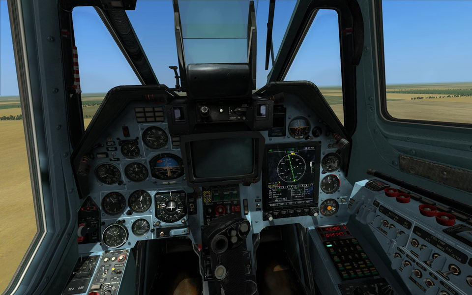

|
 DCS WORLD: BLACK SHARK 2 (Version 1.2.x) - RICARDO's Upgraded HD Cockpit Mod in G-Blue - V1 To install: 1) BACKUP FIRST! Backup Cockpit-Ka-50 Textures.zip file located in "...DCS World/Mods/aircrafts/Ka-50/Cockpit/Resources/Model/Textures/" Rename "english" folder (located in "...DCS World/Mods/aircrafts/Ka-50/Liveries/Cockpit_Ka-50/") to anything (i.e. "_english" or "helloworld") 2) Copy "Mods" folder into "DCS World" and overwrite. * If you have a problem or don't like my warning lights (on overhead panel), you can copy Ka-50 font lamp.dds stock file directly into Cockpit-Ka-50 Textures.zip file. * In case you forget rename "english" folder (you may lose description.lua file), you may find original "description.lua" file in Stock Files folder. Please feed back. Thanks so much. Have fun. Devrim (Created: 12/2012) [DCS World: BS2] Ricardo's Upgraded HD Cockpit Mods Page |